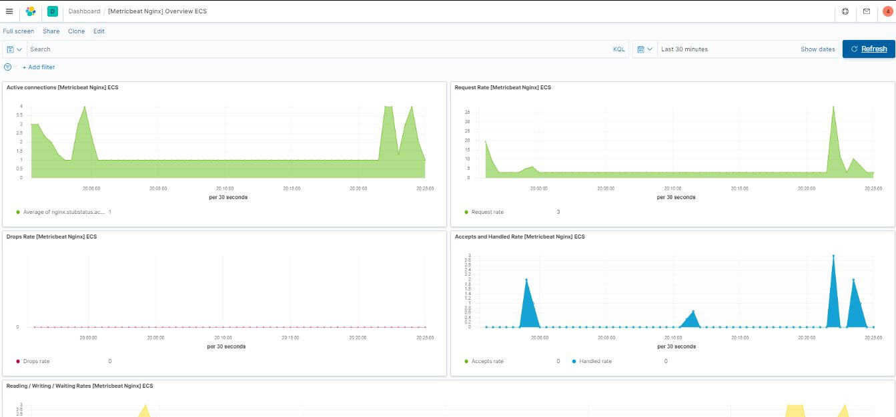
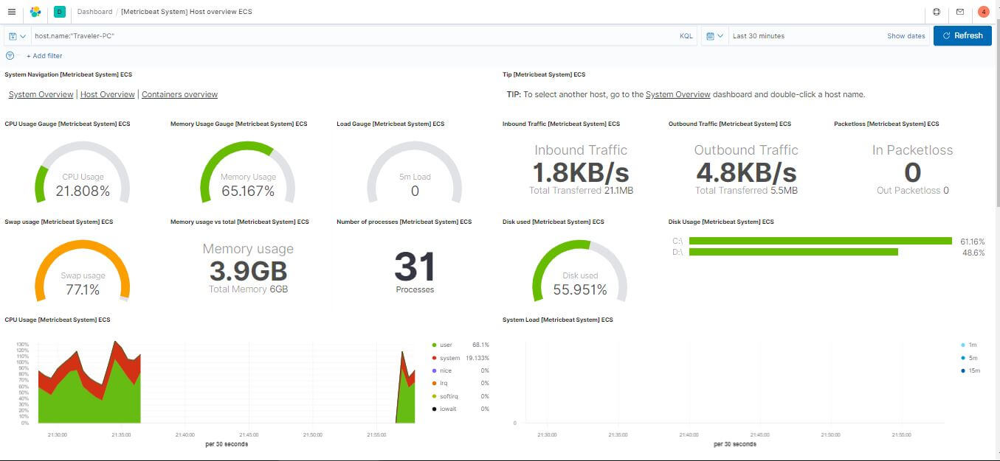

這篇文章會示範如何使用 Metricbeat 傳送 Nginx 伺服器狀態到 Elasticsearch 中，透過 Metricbeat 監控系統與服務並使用 Kibana 即時監控相關資料。
Metricbeat 簡介
透過安裝 Metricbeat 這個輕量的 shipper 在需要監控的 Server 上，就可以定時的蒐集相關系統或服務的狀態資訊到 Elasticsearch 或是 Logstash，提供系統層級的監控，目前常見的服務都提供模組支援。
為什麼系統層級 (Metric) 的監控很重要?
- 實體機硬碟要滿了，資料庫快要寫不進去資料怎麼辦?
- 方便知道什麼時候要加機台
- 都沒發現網路頻寬用滿，伺服器還是很輕鬆?
- 服務掛了等到被客訴了才發現? APP 都閃退幾次了?
- 在高附載時提供告警
- 每個服務都開一台機器，結果流量集中在少數服務上?
- 有些服務吃記憶體，有些吃運算效能，到底要怎麼配機台?
- 確認系統效能瓶頸發生的位置
Metric 跟 Log 單看內容其實很像，其中的異同在
- Metrics 跟 Logs 都提供了監控的效果
- Logs 專注在事件什麼時候發生，還有事件本身
- Metrics 就是排程收集固定資料
解決的痛點:
- 輕量不佔資源的監控
- 完整方便的 Dashboard 模板，也可以自行克制
- 搭配 Filebeats 傳回的 log 檔可能會更快找出問題
- 模組多且可直接照教學使用
- Apache
- HAProxy
- MongoDB
- MySQL
- Nginx
- PostgreSQL
- Redis
- Zookeeper
Nginx 伺服器資訊
Nginx 有內建的 stub_status 模組，啟用後可以監看基本的伺服器狀態，記得要限制 IP 存取。
1 |
|
啟用後瀏覽器瀏覽 http://127.0.0.1/server-status 就可以看到下面的資訊
1 | Active connections: 3 |
- Active connections：目前連線數 (含 Waiting)
- server accepts handled requests：接受的連線數 已經處理的連線數 已經處理的請求數
- Reading：目前正在讀取請求表頭的請求數
- Writing：目前正在讀取請求主體、處理與回應的請求數
- Waiting：keep-alive 的連線數
安裝 Metricbeat
Metricbeat 的安裝使用步驟如下
- 下載 Metricbeat 解壓縮
./metricbeat modules enable nginx啟用模組- 找到
metricbeat.yml中的 cloud.id 及 cloud.auth 並填入正確資料 - 取消註解
modules.d\nginx.yml中的server_status_path: "server-status" ./metricbeat test config -e看看有沒有打錯- ./metricbeat setup
- ./metricbeat -e
- 安裝位置盡量接近監控的系統，同一台主機會就不需要消耗網路流量
Kibana 監看 Metric
Kibana 就是一個管理的 GUI，啟動 Metricbeat 後就可以去 Dashboard 開啟相關範本後瀏覽。
Nginx Dashboard 匯整了剛剛 Nginx stub_status 模組提供的狀態

System Dashboard

Metricbeat
要評估系統和服務需要很多指標，要評估需要:
- 儲存: 讀檔、抓相關指標、網路流量
- 分析: 這就是 kibana 的工作
- 監控: 監控服務可用性
Elastic Stack 提供了最方便蒐集指標的工具也就是 Metricbeat，沒有之一。
Metricbeat 可以同時從系統及服務上收集好幾種指標傳送到 Elasticsearch 或是 Logstash 儲存，資料量比較大的話通常也會先傳到 Redis 或是 Kafka，資料的生命週期大致如下:
- 排程
- 傳送
- Metricbeat error events: 沒抓到也會送錯誤
- Hot data 儲存
- 搜尋、分析
- Warm data 封存
- Purge
要怎麼開始使用，可以參考之前寫的 Metric Quick Start，步驟大致如下:
- 下載
- 有提供各平台可執行的 binaries 檔
- 配置
- 記得正確設定 Output
./metricbeat setup --dashboards
- 啟動
- 查看資料
- Index Pattern
‒{type}beat-{version}-{yyyy-MM-dd}-XXXXXX - XXXXXX is the number of the index for a given day (文件寫的不太懂怎麼翻 XD)
- 預設每滿 30 天或是達到 50GB 新的 Index 就會 Rotate
- 資料有送到 Elasticsearch 就可以透過搜尋介面查看
- Index Pattern
實際案例
如果我們想要實作一個提供地理資訊的平台，以開源的技術選型為例，資料讀取會需要好幾個服務來源提供，這樣的架構底下只要有一個服務來源出錯，前端就會有功能出現異常，這時候我們就會想要在每個服務上面都安裝監控，去發現系統裡面的效能瓶頸。
使用組合技 Metrics + Logging + APM 我們就可以更快更方便的了解服務與系統現在的狀況，在出現效能或是系統錯誤時，我們也可以更快速地去進行相關修正。
- 資料庫: Metricbeat
- Web Service
- 如果服務在不同台主機上，就每一台都裝 Metricbeat
- 服務如果有 Log 可以搭配使用 Filebeat
- API Service: 自己實作的可以再加碼 APM

喜歡這篇文章，請幫忙拍拍手喔 🤣